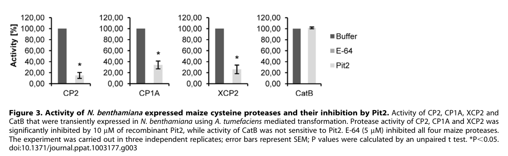

PIT2 (UMAG_01375; "protein important for tumours 2") encodes a small (120-residue) secreted effector of the maize smut fungus Ustilago maydis (Mycosarcoma maydis). It is encoded in the pit cluster next to the transmembrane protein Pit1, shares a bidirectional promoter with pit1, and is strongly induced during biotrophic growth, partly through direct binding of the unfolded-protein-response regulator Cib1 to the pit1/pit2 promoter. After signal-peptide cleavage, Pit2 is secreted to the biotrophic interface and spreads through the apoplast around colonized maize cells. There it binds and inhibits a set of apoplastic maize papain-like cysteine proteases (CP1A, CP1B, CP2 and XCP2, but not cathepsin B) whose activity is linked to salicylic-acid-associated defence and to release of the immune signalling peptide Zip1 from PROZIP1. Inhibition depends on a conserved 14-residue motif (PID14, residues 44-57); mutation of its central aromatic residues abolishes inhibition and virulence without affecting secretion, and a synthetic PID14 peptide inhibits the proteases on its own. Pit2 behaves as a substrate mimic: host proteases cleave it, releasing an inhibitory core peptide from PID14 that then blocks them. Related motifs occur in other plant-associated fungi and bacteria. pit2 deletion mutants penetrate maize but trigger defence responses, stop proliferating and fail to induce tumours.
| GO Term | Evidence | Action | Reason |
|---|---|---|---|
|
GO:0005576
extracellular region
|
EXP
PMID:21692877 Two linked genes encoding a secreted effector and a membrane... |
ACCEPT |
Summary: Doehlemann et al. (2011) showed by fluorescent tagging that Pit2 is secreted to the biotrophic interface during maize colonization (UniProt: Secreted, ECO:0000269 from this paper).
Reason: Pit2 has a signal peptide and was observed outside fungal hyphae in planta. Extracellular region is correct. Only the abstract is cached, but it states the secretion directly. The more specific host-side location (host apoplast) is added as a NEW annotation below.
Supporting Evidence:
PMID:21692877
Pit1 localizes to the fungal plasma membrane at hyphal tips, endosomes and vacuoles while Pit2 is secreted to the biotrophic interface.
PMID:23459172
Pit2 is secreted to the biotrophic interface and spreads in the apoplastic space around colonized maize cells.
|
|
GO:0005576
extracellular region
|
EXP
PMID:27093436 Unfolded Protein Response (UPR) Regulator Cib1 Controls Expr... |
ACCEPT |
Summary: Hampel et al. (2016) detected Pit2-mCherry in axenic culture supernatants, with secretion increased by ER stress in a Cib1-dependent manner.
Reason: Direct detection of the secreted protein in culture supernatant supports extracellular region. The main subject of the paper is regulation of pit2 expression and secretion by the UPR, which is fungal-side regulation and not a function of Pit2 itself.
Supporting Evidence:
PMID:27093436
Induction of DTT-mediated ER stress resulted in strongly increased levels of secreted Pit2-mCherry in the supernatant, compared to the untreated WT.
PMID:27093436
Secretion of Pit2-mCherry is strongly increased upon ER stress and dependent on Cib1
|
|
GO:0005576
extracellular region
|
IEA
GO_REF:0000044 |
ACCEPT |
Summary: Mapping of the UniProt subcellular location "Secreted", which is itself experimentally supported.
Reason: Correct mapping, consistent with the two experimental annotations.
Supporting Evidence:
PMID:23459172
Pit2 is secreted to the biotrophic interface and spreads in the apoplastic space around colonized maize cells.
|
|
GO:0004869
cysteine-type endopeptidase inhibitor activity
|
IDA
PMID:23459172 Compatibility in the Ustilago maydis-maize interaction requi... |
NEW |
Summary: Recombinant Pit2 inhibits maize apoplastic cysteine protease activity in apoplastic fluid fractions in a concentration-dependent way, and inhibits individually expressed CP1A, CP2 and XCP2 but not CatB. It binds CP1A, CP1B, CP2 and XCP2 in yeast two-hybrid assays and co-immunoprecipitates with CP2. A PID14-motif mutant (Pit2mut49-53) loses inhibition, and the synthetic PID14 peptide inhibits on its own.
Reason: The core molecular function of Pit2 is absent from GOA, which carries only a location term. Direct in vitro assays with purified protein, target specificity, and loss-of-function mutants show that Pit2 itself has this activity, so the participation test is met. Comparator check: the Phytophthora infestans apoplastic PLCP-inhibitor effector EPIC2B (D0NBV3) carries GO:0004869 and GO:0030414 in GOA, so the term is the one GO uses for effectors in this role. GO:0004869 is the specific child of peptidase inhibitor activity and matches the papain-like (C1A) target class. The 2019 substrate-mimic model (processing releases the inhibitory core) does not change the activity term, because inhibition is carried out by the Pit2 polypeptide or its processed product.
Supporting Evidence:
PMID:23459172
Together, we conclude from these data that Pit2 functions as an inhibitor of the apoplastic maize cysteine proteases CP1A, CP2 and XCP2 but not CatB.
PMID:23459172
By contrast to the native protein, Pit2mut49–53 did not cause a significant inhibition of protease activity when being applied at similar concentrations (Figure 6A).
PMID:30952847
Pit2 is a suitable substrate for apoplastic PLCPs and its processing releases the embedded inhibitor peptide, which in turn blocks PLCPs to modulate host immunity.
|
|
GO:0140403
effector-mediated suppression of host innate immune response
|
IMP
PMID:23459172 Compatibility in the Ustilago maydis-maize interaction requi... |
NEW |
Summary: Pit2 suppresses salicylic-acid-associated apoplastic immunity in maize by inhibiting the host papain-like cysteine proteases that drive it. pit2 deletion mutants trigger broad defence responses and host-cell collapse soon after penetration. Inhibitor-motif mutants that are still secreted and localize correctly do not restore virulence, which ties the virulence function to protease inhibition.
Reason: This symbiont-side process term describes what the effector does to the host. It is chosen over plant-side defence terms or a bare virulence phenotype. Participation test: Pit2 itself performs the step, because it inhibits the host immune proteases directly. This is not just necessity evidence: the PID14 point mutants separate protease inhibition from secretion and localization, and the free PID14 peptide restores virulence partially. Comparator check: EPIC2B, which has the same role, carries the parent term GO:0052170 (symbiont-mediated suppression of host innate immune response). GO:0140403 is the effector-specific child and fits a secreted protein. The more specific GO:0140502 (suppression of host salicylic acid-mediated innate immune signaling) was not used. The target proteases are activated by SA and process PROZIP1 into Zip1, which amplifies SA signalling, but Pit2 does not act on an SA signalling component itself (see suggested_questions).
Supporting Evidence:
PMID:23459172
We now show that Pit2 functions as an inhibitor of a set of apoplastic maize cysteine proteases, whose activity is directly linked with salicylic-acid-associated plant defenses.
PMID:23459172
Deletion mutants for pit2 successfully penetrate host cells but elicit various defense responses, which stops further fungal proliferation.
PMID:30952847
Both features, substrate recognition by PLCPs and subsequently PLCP inhibition, are required for full Pit2 virulence function in maize
file:MYCMD/PIT2/PIT2-deep-research-falcon.md
Maize CP1 and CP2, but not XCP2 or CatB, processed PROZIP1 to release immune-active Zip1
|
|
GO:0140593
host apoplast
|
IDA
PMID:23459172 Compatibility in the Ustilago maydis-maize interaction requi... |
NEW |
Summary: Pit2-mCherry accumulates at the biotrophic interface around intercellular hyphae and spreads through the apoplastic space around colonized maize cells, which is where its protease targets act.
Reason: More specific than extracellular region and describes the site of action (the host apoplast that contains the target PLCPs). This matches the location used for the companion apoplastic effector CMU1 before it is taken up into host cells.
Supporting Evidence:
PMID:23459172
Pit2 is secreted to the biotrophic interface and spreads in the apoplastic space around colonized maize cells.
PMID:23459172
Both the mCherry-tagged Pit2Δ44–57 and Pit2mut49–53 proteins were found to accumulate in the biotrophic interface, surrounding the intercellular hyphae.
|
Q: Pit2 targets the maize proteases CP1 and CP2, which process PROZIP1 into the Zip1 peptide that amplifies salicylic acid signalling. Is this enough to annotate Pit2 to GO:0140502 (effector-mediated suppression of host salicylic acid-mediated innate immune signaling), as for CMU1? Or should that term be kept for effectors that act on SA biosynthesis or signalling components directly?
Q: Under the substrate-mimic model, is the active inhibitor the intact protein, the processed PID14-derived core peptide, or both? If only the processed peptide inhibits in planta, should the activity be recorded for a processed chain feature rather than the precursor?
Q: A 2025 preprint (not peer reviewed) proposes that a Pit2-derived peptide (WWFGFTGSL) activates the fungal GPCR Gpe1 and promotes fungal proliferation. If confirmed, this would be a second, fungus-side signalling role (receptor ligand activity) and would need separate annotation.
Experiment: Measure Zip1 release and free SA in maize leaves infected with wild-type, pit2 deletion and PID14-mutant strains, to test directly whether Pit2 suppresses the PROZIP1-Zip1-SA amplification loop in planta.
Experiment: Determine a co-crystal or cryo-EM structure of CP2 or XCP2 with the processed Pit2 inhibitory peptide, to define the binding mode and to tell apart substrate-like and inhibitor-like interactions at the active site.
The research report should be a detailed narrative explaining the function, biological processes, and localization of the gene product. Citations should be given for all claims.
You should prioritize authoritative reviews and primary scientific literature when conducting research. You can supplement
this with annotations you find in gene/protein databases, but these can be outdated or inaccurate.
We are specifically interested in the primary function of the gene - for enzymes, what reaction is catalyzed, and what is the substrate specificity? For transporters, what is the substrate? For structural proteins or adapters, what is the broader structural role? For signaling molecules, what is the role in the pathway.
We are interested in where in or outside the cell the gene product carries out its function.
We are also interested in the signaling or biochemical pathways in which the gene functions. We are less interested in broad pleiotropic effects, except where these elucidate the precise role.
Include evidence where possible. We are interested in both experimental evidence as well as inference from structure, evolution, or bioinformatic analysis. Precise studies should be prioritized over high-throughput, where available.
Identity and scope. The target is the Mycosarcoma maydis protein historically studied as Ustilago maydis Pit2, UniProt A0A0D1EAR7, encoded by UMAG_01375. The locus assignment is explicit in the fungal literature. It must not be confused with the unrelated rice Pit2, an intracellular NLR immune receptor described in a 2024 paper, or with the neighboring fungal transmembrane protein Pit1. No canonical protein-family assignment is established for fungal Pit2; its experimentally defined functional feature is a conserved protease-inhibitory peptide motif. (hampel2016unfoldedproteinresponse pages 4-5, mueller2013compatibilityinthe pages 5-8, li2024annlrparalog pages 1-2, villamil2019afungalsubstrate pages 1-2)
Pit2 is a secreted virulence effector and inhibitor of host papain-like cysteine proteases (PLCPs), not an enzyme that catalyzes a reaction. During maize infection, fluorescently tagged Pit2 accumulates in the extracellular biotrophic interface surrounding fungal hyphae and spreads into adjacent plant apoplastic spaces, including cell-to-cell penetration sites. This puts it alongside the host defense proteases on which it acts. Mutating its inhibitory motif did not prevent secretion or interface localization, separating its biochemical activity from its trafficking. (mueller2013compatibilityinthe pages 2-3, mueller2013compatibilityinthe pages 4-5, mueller2013compatibilityinthe pages 5-8)
Pit2 binds maize CP1A, CP1B, CP2 and XCP2 in interaction assays; direct CP2 association was additionally supported by co-immunoprecipitation. In assays of individually expressed enzymes, intact recombinant Pit2 inhibited CP1A, CP2 and XCP2, but not CatB. CP1B binding was reported, but the cited four-enzyme inhibition comparison did not separately establish CP1B catalytic inhibition. In the original recombinant-CP2 experiment, Pit2 reduced measured activity by approximately 85% under the tested conditions. The inspected experimental figure independently confirms the CP1A/CP2/XCP2-versus-CatB distinction. (mueller2013compatibilityinthe pages 2-3, mueller2013compatibilityinthe pages 4-5, mueller2013compatibilityinthe media f9fd11d7)
A compact account of the principal experiments follows. (mueller2013compatibilityinthe pages 4-5, villamil2019afungalsubstrate pages 7-8, hampel2016unfoldedproteinresponse pages 7-9)
| Feature / experiment | Result and interpretation | Primary citation (author, year, DOI URL) |
|---|---|---|
| Target interaction by yeast two-hybrid and co-immunoprecipitation | Pit2 interacted with maize apoplastic PLCPs CP1A, CP1B, CP2, and XCP2, but not CatB. CP2 interaction was independently supported by co-immunoprecipitation and did not require an intact CP2 catalytic triad. (mueller2013compatibilityinthe pages 2-3, mueller2013compatibilityinthe pages 3-4) | Mueller et al., 2013, DOI |
| Protease-inhibition specificity | Recombinant full-length Pit2 significantly inhibited individually expressed CP1A, CP2, and XCP2, whereas CatB remained insensitive; E-64 inhibited all four. Thus, intact Pit2 is a selective PLCP inhibitor rather than a universal cysteine-protease inhibitor. (mueller2013compatibilityinthe pages 4-5, mueller2013compatibilityinthe media f9fd11d7) | Mueller et al., 2013, DOI |
| Free PID14 versus intact Pit2 | The isolated PID14 peptide inhibited CP1A, CP2, XCP2, and CatB, although intact Pit2 did not inhibit CatB. Flanking regions of full-length Pit2 therefore constrain target specificity. Mutated PID14 lacked inhibitory activity. (mueller2013compatibilityinthe pages 8-9, mueller2013compatibilityinthe pages 5-8) | Mueller et al., 2013, DOI |
| Functional motif and essential residues | Pit2 contains a conserved 14-residue protease-inhibitory region at amino acids 44–57 (PID14). Deletion or aromatic-residue substitution abolished inhibition and virulence without disrupting secretion or localization; later Ala substitution of R48 and W49 likewise failed to restore tumor formation. (mueller2013compatibilityinthe pages 5-8, villamil2019afungalsubstrate pages 10-11) | Mueller et al., 2013, DOI; Misas Villamil et al., 2019, DOI |
| Host-PLCP-dependent processing and potency | Maize apoplastic PLCPs cleaved Pit2; stabilization by E-64 supported PLCP-dependent processing. Synthetic UmPID14 inhibited maize PLCP activity more efficiently than full-length UmPit2, with reported IC50 values of 2.35 ± 0.16 µM and 3.49 ± 0.25 µM, respectively. These results support a substrate-mimic model in which processing exposes or releases an inhibitory core. (villamil2019afungalsubstrate pages 7-8, villamil2019afungalsubstrate pages 3-4, villamil2019afungalsubstrate pages 2-3) | Misas Villamil et al., 2019, DOI |
| Indirect downstream target pathway: PROZIP1–Zip1 | Maize CP1 and CP2, but not XCP2 or CatB, processed PROZIP1 to release immune-active Zip1. Zip1 increased salicylic-acid-associated defense, including approximately 20-fold free-SA accumulation; Pit2 inhibition of CP1 and CP2 therefore provides a mechanistic route for suppressing this amplification circuit. (sebastian2018anapoplasticpeptide pages 22-24, sebastian2018anapoplasticpeptide pages 5-9, sebastian2018anapoplasticpeptide pages 24-26) | Ziemann et al., 2018, DOI |
| Localization | mCherry-tagged Pit2 was secreted and accumulated at the biotrophic interface around intercellular hyphae, spreading through apoplastic spaces near cell-to-cell penetration sites. Motif-mutant proteins retained this localization, showing that their loss of function was biochemical rather than a trafficking defect. (mueller2013compatibilityinthe pages 4-5, mueller2013compatibilityinthe pages 5-8, djamei2012ustilagomaydisdissecting pages 2-3) | Mueller et al., 2013, DOI |
| Cib1/UPR-dependent expression and secretion | Cib1 bound the UPRE-containing bidirectional pit1/pit2 promoter. Deleting the UPRE abolished ER-stress-dependent pit2 induction and reduced virulence; active UPR also promoted Pit2 processing and secretion. (hampel2016unfoldedproteinresponse pages 7-9, hampel2016unfoldedproteinresponse pages 1-2, hampel2016unfoldedproteinresponse pages 9-11) | Hampel et al., 2016, DOI |
| Δpit2 phenotype and genetic rescue | Δpit2 fungi penetrated and initially established biotrophy but subsequently induced broad host defense, host-cell collapse, loss of sustained fungal proliferation, and failure or severe reduction of tumor formation. Wild-type pit2 restored virulence, whereas PID14-defective alleles did not. (mueller2013compatibilityinthe pages 1-2, mueller2013compatibilityinthe pages 2-3, mueller2013compatibilityinthe pages 4-5) | Mueller et al., 2013, DOI |
Table: Experimental evidence defining the localization, host targets, inhibitory mechanism, regulation, and virulence function of Ustilago maydis Pit2 (UMAG_01375). The table excludes the unrelated rice NLR named Pit2.
Pit2 contains a 14-residue protease-inhibitory domain, PID14, at residues 44–57. Deletion of this region or substitution of its central aromatic residues abolished protease inhibition and prevented a pit2-deletion strain from regaining normal tumor-forming ability, although the altered proteins remained detectable and correctly localized. The isolated synthetic PID14 peptide inhibited maize proteases, whereas a motif-mutant peptide did not. An important specificity qualification is that free PID14 also inhibited CatB, even though full-length Pit2 did not: inhibition by the isolated motif must therefore not be equated with the target range of the intact effector. (mueller2013compatibilityinthe pages 4-5, mueller2013compatibilityinthe pages 5-8, mueller2013compatibilityinthe pages 8-9)
Subsequent work refined the original inhibitor model. Maize apoplastic fluid processes Pit2, and the cysteine-protease inhibitor E-64 protects it from processing; mass spectrometry and peptide assays support PLCP-dependent release of an inhibitory motif-containing region. Synthetic UmPID14 inhibited the assayed maize PLCP activity more potently than full-length UmPit2: reported IC₅₀ values were 2.35 ± 0.16 µM and 3.49 ± 0.25 µM, respectively. Substituting R48 and W49 abolished restoration of virulence. These results underpin the authors’ substrate-mimicry model: host defense proteases recognize and cut Pit2, generating a peptide that inhibits further proteolysis. Cleavage and inhibition are experimentally supported; the precise atomic contacts and whether every processing event leaves inhibitor bound at the active site remain mechanistic models rather than directly established structural facts. (villamil2019afungalsubstrate pages 7-8, villamil2019afungalsubstrate pages 10-11, villamil2019afungalsubstrate pages 3-4, villamil2019afungalsubstrate pages 2-3)
The inhibitory motif has related sequences in other plant-associated fungi and bacteria, termed the conserved microbial inhibitor of proteases (cMIP) motif. This is evidence for a shared motif-level inhibitory strategy, not grounds to assign Pit2 to a conventional globular inhibitor family or assume that proteins carrying the motif have identical host specificity. Indeed, Pit2 orthologs and motif-swap constructs differed in their ability to inhibit maize PLCPs and complement fungal virulence. (villamil2019afungalsubstrate pages 1-2, villamil2019afungalsubstrate pages 11-12, villamil2019afungalsubstrate pages 2-3)
A defined downstream host pathway explains why inhibiting CP1 and CP2 matters. These apoplastic maize proteases cleave the precursor PROZIP1 to produce the defense-signaling peptide Zip1; XCP2 and CatB did not cleave PROZIP1 in the corresponding tests. Zip1 activates salicylic-acid-associated defense-gene expression and PLCP activity, forming an immune-amplification circuit. Zip1 treatment yielded approximately 20-fold higher free salicylic acid than mock treatment in the reported experiment. Thus, suppressing CP1/CP2 offers a mechanistic route by which Pit2 can attenuate PROZIP1–Zip1–salicylic-acid signaling. The PROZIP1 cleavage experiments establish the host pathway; treating every downstream effect as a directly measured Pit2–PROZIP1 interaction would overstate the evidence. (sebastian2018anapoplasticpeptide pages 22-24, sebastian2018anapoplasticpeptide pages 12-15, sebastian2018anapoplasticpeptide pages 5-9, sebastian2018anapoplasticpeptide pages 24-26)
Consistent with that immune-suppression function, Δpit2 fungi can penetrate maize and begin biotrophic growth but subsequently encounter stronger host defense, host-cell collapse and restricted fungal proliferation, with loss or severe reduction of tumor formation. Infected tissue lacking Pit2 showed about twice the apoplastic protease activity measured after wild-type infection. Restoring wild-type pit2 rescued tumor formation; inhibitory-motif mutants did not. These are laboratory infection and complementation results, not field estimates of crop loss. (mueller2013compatibilityinthe pages 1-2, mueller2013compatibilityinthe pages 8-9, mueller2013compatibilityinthe pages 5-8)
On the fungal regulatory side, the unfolded-protein-response transcription factor Cib1 binds an unfolded-protein-response element in the shared pit1/pit2 promoter. Removing that element abolished ER-stress-induced pit2 expression and reduced virulence; UPR activation also increased Pit2 processing and secretion. Pit1 is a distinct fungal membrane protein associated with hyphal tips and intracellular membrane structures. Similar pit1 and pit2 infection phenotypes suggest coordinated functions but do not establish direct Pit1–Pit2 binding. (hampel2016unfoldedproteinresponse pages 7-9, hampel2016unfoldedproteinresponse pages 9-11, djamei2012ustilagomaydisdissecting pages 2-3)
The 2023 Molecular Plant Pathology review retains Pit2 among the characterized U. maydis effectors targeting maize CP1A/CP1B, CP2 and XCP2, but summarizes earlier experiments rather than reporting a newly discovered Pit2 activity. Likewise, a 2024 maize-virus study provides independent context that host PLCPs and salicylic-acid defense are pathogen targets; its new experiments concern viral NIa-Pro and maize CCP1, not fungal Pit2. A 2023 study of the fungal PR-1-like protein UmPR-1La investigates a different protein and must not be used to assign its CAP domain or cell-surface localization to Pit2. The well-supported practical application of Pit2 remains as an experimentally tractable maize–smut virulence model and protease-inhibitor motif; the sources examined do not establish a deployed Pit2-based treatment or resistant maize cultivar. (yu2023progressinpathogenesis pages 4-5, yuan2024niaproofsugarcane pages 2-4, lin2023ustilagomaydispr1like pages 2-3)
Emerging, lower-certainty development: A September 2025 bioRxiv preprint, explicitly identifying UmPit2 as UMAG_01375, proposes an additional role for host-processed Pit2 as a source of the peptide WWFGFTGSL, which activates the fungal GPCR Gpe1 and promotes proliferation. It reports receptor-reporter and fungal-growth assays, but this proposed signaling function is not peer-reviewed in the cited source and should not displace the established primary annotation as an apoplastic PLCP inhibitor. (mendozarojas2025acoevolvedpeptidegpcr pages 1-5, mendozarojas2025acoevolvedpeptidegpcr pages 5-7, mendozarojas2025acoevolvedpeptidegpcr pages 7-11)
References
(hampel2016unfoldedproteinresponse pages 4-5): Martin Hampel, Mareike Jakobi, Lara Schmitz, Ute Meyer, Florian Finkernagel, Gunther Doehlemann, and Kai Heimel. Unfolded protein response (upr) regulator cib1 controls expression of genes encoding secreted virulence factors in ustilago maydis. PLoS ONE, 11:e0153861, Apr 2016. URL: https://doi.org/10.1371/journal.pone.0153861, doi:10.1371/journal.pone.0153861. This article has 32 citations and is from a peer-reviewed journal.
(mueller2013compatibilityinthe pages 5-8): André N. Mueller, Sebastian Ziemann, Steffi Treitschke, Daniela Aßmann, and Gunther Doehlemann. Compatibility in the ustilago maydis–maize interaction requires inhibition of host cysteine proteases by the fungal effector pit2. PLoS Pathogens, 9:e1003177, Feb 2013. URL: https://doi.org/10.1371/journal.ppat.1003177, doi:10.1371/journal.ppat.1003177. This article has 365 citations and is from a highest quality peer-reviewed journal.
(li2024annlrparalog pages 1-2): Yuying Li, Qiong Wang, Huimin Jia, Kazuya Ishikawa, Ken-ichi Kosami, Takahiro Ueba, Atsumi Tsujimoto, Miki Yamanaka, Yasuyuki Yabumoto, Daisuke Miki, Eriko Sasaki, Yoichiro Fukao, Masayuki Fujiwara, Takako Kaneko-Kawano, Li Tan, Chojiro Kojima, Rod A. Wing, Alfino Sebastian, Hideki Nishimura, Fumi Fukada, Qingfeng Niu, Motoki Shimizu, Kentaro Yoshida, Ryohei Terauchi, Ko Shimamoto, and Yoji Kawano. An nlr paralog pit2 generated from tandem duplication of pit1 fine-tunes pit1 localization and function. Nature Communications, May 2024. URL: https://doi.org/10.1038/s41467-024-48943-5, doi:10.1038/s41467-024-48943-5. This article has 12 citations and is from a highest quality peer-reviewed journal.
(villamil2019afungalsubstrate pages 1-2): Johana C. Misas Villamil, André N. Mueller, Fatih Demir, Ute Meyer, Bilal Ökmen, Jan Schulze Hüynck, Marlen Breuer, Helen Dauben, Joe Win, Pitter F. Huesgen, and Gunther Doehlemann. A fungal substrate mimicking molecule suppresses plant immunity via an inter-kingdom conserved motif. Nature Communications, Apr 2019. URL: https://doi.org/10.1038/s41467-019-09472-8, doi:10.1038/s41467-019-09472-8. This article has 93 citations and is from a highest quality peer-reviewed journal.
(mueller2013compatibilityinthe pages 2-3): André N. Mueller, Sebastian Ziemann, Steffi Treitschke, Daniela Aßmann, and Gunther Doehlemann. Compatibility in the ustilago maydis–maize interaction requires inhibition of host cysteine proteases by the fungal effector pit2. PLoS Pathogens, 9:e1003177, Feb 2013. URL: https://doi.org/10.1371/journal.ppat.1003177, doi:10.1371/journal.ppat.1003177. This article has 365 citations and is from a highest quality peer-reviewed journal.
(mueller2013compatibilityinthe pages 4-5): André N. Mueller, Sebastian Ziemann, Steffi Treitschke, Daniela Aßmann, and Gunther Doehlemann. Compatibility in the ustilago maydis–maize interaction requires inhibition of host cysteine proteases by the fungal effector pit2. PLoS Pathogens, 9:e1003177, Feb 2013. URL: https://doi.org/10.1371/journal.ppat.1003177, doi:10.1371/journal.ppat.1003177. This article has 365 citations and is from a highest quality peer-reviewed journal.
(mueller2013compatibilityinthe media f9fd11d7): André N. Mueller, Sebastian Ziemann, Steffi Treitschke, Daniela Aßmann, and Gunther Doehlemann. Compatibility in the ustilago maydis–maize interaction requires inhibition of host cysteine proteases by the fungal effector pit2. PLoS Pathogens, 9:e1003177, Feb 2013. URL: https://doi.org/10.1371/journal.ppat.1003177, doi:10.1371/journal.ppat.1003177. This article has 365 citations and is from a highest quality peer-reviewed journal.
(villamil2019afungalsubstrate pages 7-8): Johana C. Misas Villamil, André N. Mueller, Fatih Demir, Ute Meyer, Bilal Ökmen, Jan Schulze Hüynck, Marlen Breuer, Helen Dauben, Joe Win, Pitter F. Huesgen, and Gunther Doehlemann. A fungal substrate mimicking molecule suppresses plant immunity via an inter-kingdom conserved motif. Nature Communications, Apr 2019. URL: https://doi.org/10.1038/s41467-019-09472-8, doi:10.1038/s41467-019-09472-8. This article has 93 citations and is from a highest quality peer-reviewed journal.
(hampel2016unfoldedproteinresponse pages 7-9): Martin Hampel, Mareike Jakobi, Lara Schmitz, Ute Meyer, Florian Finkernagel, Gunther Doehlemann, and Kai Heimel. Unfolded protein response (upr) regulator cib1 controls expression of genes encoding secreted virulence factors in ustilago maydis. PLoS ONE, 11:e0153861, Apr 2016. URL: https://doi.org/10.1371/journal.pone.0153861, doi:10.1371/journal.pone.0153861. This article has 32 citations and is from a peer-reviewed journal.
(mueller2013compatibilityinthe pages 3-4): André N. Mueller, Sebastian Ziemann, Steffi Treitschke, Daniela Aßmann, and Gunther Doehlemann. Compatibility in the ustilago maydis–maize interaction requires inhibition of host cysteine proteases by the fungal effector pit2. PLoS Pathogens, 9:e1003177, Feb 2013. URL: https://doi.org/10.1371/journal.ppat.1003177, doi:10.1371/journal.ppat.1003177. This article has 365 citations and is from a highest quality peer-reviewed journal.
(mueller2013compatibilityinthe pages 8-9): André N. Mueller, Sebastian Ziemann, Steffi Treitschke, Daniela Aßmann, and Gunther Doehlemann. Compatibility in the ustilago maydis–maize interaction requires inhibition of host cysteine proteases by the fungal effector pit2. PLoS Pathogens, 9:e1003177, Feb 2013. URL: https://doi.org/10.1371/journal.ppat.1003177, doi:10.1371/journal.ppat.1003177. This article has 365 citations and is from a highest quality peer-reviewed journal.
(villamil2019afungalsubstrate pages 10-11): Johana C. Misas Villamil, André N. Mueller, Fatih Demir, Ute Meyer, Bilal Ökmen, Jan Schulze Hüynck, Marlen Breuer, Helen Dauben, Joe Win, Pitter F. Huesgen, and Gunther Doehlemann. A fungal substrate mimicking molecule suppresses plant immunity via an inter-kingdom conserved motif. Nature Communications, Apr 2019. URL: https://doi.org/10.1038/s41467-019-09472-8, doi:10.1038/s41467-019-09472-8. This article has 93 citations and is from a highest quality peer-reviewed journal.
(villamil2019afungalsubstrate pages 3-4): Johana C. Misas Villamil, André N. Mueller, Fatih Demir, Ute Meyer, Bilal Ökmen, Jan Schulze Hüynck, Marlen Breuer, Helen Dauben, Joe Win, Pitter F. Huesgen, and Gunther Doehlemann. A fungal substrate mimicking molecule suppresses plant immunity via an inter-kingdom conserved motif. Nature Communications, Apr 2019. URL: https://doi.org/10.1038/s41467-019-09472-8, doi:10.1038/s41467-019-09472-8. This article has 93 citations and is from a highest quality peer-reviewed journal.
(villamil2019afungalsubstrate pages 2-3): Johana C. Misas Villamil, André N. Mueller, Fatih Demir, Ute Meyer, Bilal Ökmen, Jan Schulze Hüynck, Marlen Breuer, Helen Dauben, Joe Win, Pitter F. Huesgen, and Gunther Doehlemann. A fungal substrate mimicking molecule suppresses plant immunity via an inter-kingdom conserved motif. Nature Communications, Apr 2019. URL: https://doi.org/10.1038/s41467-019-09472-8, doi:10.1038/s41467-019-09472-8. This article has 93 citations and is from a highest quality peer-reviewed journal.
(sebastian2018anapoplasticpeptide pages 22-24): Sebastian Ziemann, Karina van der Linde, Urs Lahrmann, Beyda Acar, Farnusch Kaschani, Tom Colby, Markus Kaiser, Yezhang Ding, Eric Schmelz, Alisa Huffaker, Nicholas Holton, Cyril Zipfel, and Gunther Doehlemann. An apoplastic peptide activates salicylic acid signalling in maize. Nature Plants, 4:172-180, Feb 2018. URL: https://doi.org/10.1038/s41477-018-0116-y, doi:10.1038/s41477-018-0116-y. This article has 167 citations and is from a highest quality peer-reviewed journal.
(sebastian2018anapoplasticpeptide pages 5-9): Sebastian Ziemann, Karina van der Linde, Urs Lahrmann, Beyda Acar, Farnusch Kaschani, Tom Colby, Markus Kaiser, Yezhang Ding, Eric Schmelz, Alisa Huffaker, Nicholas Holton, Cyril Zipfel, and Gunther Doehlemann. An apoplastic peptide activates salicylic acid signalling in maize. Nature Plants, 4:172-180, Feb 2018. URL: https://doi.org/10.1038/s41477-018-0116-y, doi:10.1038/s41477-018-0116-y. This article has 167 citations and is from a highest quality peer-reviewed journal.
(sebastian2018anapoplasticpeptide pages 24-26): Sebastian Ziemann, Karina van der Linde, Urs Lahrmann, Beyda Acar, Farnusch Kaschani, Tom Colby, Markus Kaiser, Yezhang Ding, Eric Schmelz, Alisa Huffaker, Nicholas Holton, Cyril Zipfel, and Gunther Doehlemann. An apoplastic peptide activates salicylic acid signalling in maize. Nature Plants, 4:172-180, Feb 2018. URL: https://doi.org/10.1038/s41477-018-0116-y, doi:10.1038/s41477-018-0116-y. This article has 167 citations and is from a highest quality peer-reviewed journal.
(djamei2012ustilagomaydisdissecting pages 2-3): Armin Djamei and Regine Kahmann. Ustilago maydis: dissecting the molecular interface between pathogen and plant. PLoS Pathogens, 8:e1002955, Nov 2012. URL: https://doi.org/10.1371/journal.ppat.1002955, doi:10.1371/journal.ppat.1002955. This article has 146 citations and is from a highest quality peer-reviewed journal.
(hampel2016unfoldedproteinresponse pages 1-2): Martin Hampel, Mareike Jakobi, Lara Schmitz, Ute Meyer, Florian Finkernagel, Gunther Doehlemann, and Kai Heimel. Unfolded protein response (upr) regulator cib1 controls expression of genes encoding secreted virulence factors in ustilago maydis. PLoS ONE, 11:e0153861, Apr 2016. URL: https://doi.org/10.1371/journal.pone.0153861, doi:10.1371/journal.pone.0153861. This article has 32 citations and is from a peer-reviewed journal.
(hampel2016unfoldedproteinresponse pages 9-11): Martin Hampel, Mareike Jakobi, Lara Schmitz, Ute Meyer, Florian Finkernagel, Gunther Doehlemann, and Kai Heimel. Unfolded protein response (upr) regulator cib1 controls expression of genes encoding secreted virulence factors in ustilago maydis. PLoS ONE, 11:e0153861, Apr 2016. URL: https://doi.org/10.1371/journal.pone.0153861, doi:10.1371/journal.pone.0153861. This article has 32 citations and is from a peer-reviewed journal.
(mueller2013compatibilityinthe pages 1-2): André N. Mueller, Sebastian Ziemann, Steffi Treitschke, Daniela Aßmann, and Gunther Doehlemann. Compatibility in the ustilago maydis–maize interaction requires inhibition of host cysteine proteases by the fungal effector pit2. PLoS Pathogens, 9:e1003177, Feb 2013. URL: https://doi.org/10.1371/journal.ppat.1003177, doi:10.1371/journal.ppat.1003177. This article has 365 citations and is from a highest quality peer-reviewed journal.
(villamil2019afungalsubstrate pages 11-12): Johana C. Misas Villamil, André N. Mueller, Fatih Demir, Ute Meyer, Bilal Ökmen, Jan Schulze Hüynck, Marlen Breuer, Helen Dauben, Joe Win, Pitter F. Huesgen, and Gunther Doehlemann. A fungal substrate mimicking molecule suppresses plant immunity via an inter-kingdom conserved motif. Nature Communications, Apr 2019. URL: https://doi.org/10.1038/s41467-019-09472-8, doi:10.1038/s41467-019-09472-8. This article has 93 citations and is from a highest quality peer-reviewed journal.
(sebastian2018anapoplasticpeptide pages 12-15): Sebastian Ziemann, Karina van der Linde, Urs Lahrmann, Beyda Acar, Farnusch Kaschani, Tom Colby, Markus Kaiser, Yezhang Ding, Eric Schmelz, Alisa Huffaker, Nicholas Holton, Cyril Zipfel, and Gunther Doehlemann. An apoplastic peptide activates salicylic acid signalling in maize. Nature Plants, 4:172-180, Feb 2018. URL: https://doi.org/10.1038/s41477-018-0116-y, doi:10.1038/s41477-018-0116-y. This article has 167 citations and is from a highest quality peer-reviewed journal.
(yu2023progressinpathogenesis pages 4-5): Chun-Man Yu, Jianzhao Qi, Haiyan Han, Pengchao Wang, and Chengwei Liu. Progress in pathogenesis research of ustilago maydis, and the metabolites involved along with their biosynthesis. Molecular Plant Pathology, 24:495-509, Feb 2023. URL: https://doi.org/10.1111/mpp.13307, doi:10.1111/mpp.13307. This article has 42 citations and is from a peer-reviewed journal.
(yuan2024niaproofsugarcane pages 2-4): Wen Yuan, Xi Chen, Kaitong Du, Tong Jiang, Mengfei Li, Yanyong Cao, Xiangdong Li, Gunther Doehlemann, Zaifeng Fan, and Tao Zhou. Nia-pro of sugarcane mosaic virus targets corn cysteine protease 1 (ccp1) to undermine salicylic acid-mediated defense in maize. Mar 2024. URL: https://doi.org/10.1371/journal.ppat.1012086, doi:10.1371/journal.ppat.1012086. This article has 13 citations and is from a highest quality peer-reviewed journal.
(lin2023ustilagomaydispr1like pages 2-3): Yu-Han Lin, Meng-Yun Xu, Chuan-Chih Hsu, Florensia Ariani Damei, Hui-Chun Lee, Wei-Lun Tsai, Cuong V. Hoang, Yin-Ru Chiang, and Lay-Sun Ma. Ustilago maydis pr-1-like protein has evolved two distinct domains for dual virulence activities. Nature Communications, Sep 2023. URL: https://doi.org/10.1038/s41467-023-41459-4, doi:10.1038/s41467-023-41459-4. This article has 35 citations and is from a highest quality peer-reviewed journal.
(mendozarojas2025acoevolvedpeptidegpcr pages 1-5): Gabriel Mendoza-Rojas, Philip Nakonz, Min Lu, Johannes Postma, Naomi Shtakser, Max Heinen, Manav Patel, Orlando Arguello-Miranda, Sonja Billerbeck, and Florian Altegoer. A co-evolved peptide-gpcr system senses host entry to drive fungal infection. BioRxiv, Sep 2025. URL: https://doi.org/10.1101/2025.09.26.678928, doi:10.1101/2025.09.26.678928. This article has 5 citations.
(mendozarojas2025acoevolvedpeptidegpcr pages 5-7): Gabriel Mendoza-Rojas, Philip Nakonz, Min Lu, Johannes Postma, Naomi Shtakser, Max Heinen, Manav Patel, Orlando Arguello-Miranda, Sonja Billerbeck, and Florian Altegoer. A co-evolved peptide-gpcr system senses host entry to drive fungal infection. BioRxiv, Sep 2025. URL: https://doi.org/10.1101/2025.09.26.678928, doi:10.1101/2025.09.26.678928. This article has 5 citations.
(mendozarojas2025acoevolvedpeptidegpcr pages 7-11): Gabriel Mendoza-Rojas, Philip Nakonz, Min Lu, Johannes Postma, Naomi Shtakser, Max Heinen, Manav Patel, Orlando Arguello-Miranda, Sonja Billerbeck, and Florian Altegoer. A co-evolved peptide-gpcr system senses host entry to drive fungal infection. BioRxiv, Sep 2025. URL: https://doi.org/10.1101/2025.09.26.678928, doi:10.1101/2025.09.26.678928. This article has 5 citations.

Sources: UniProt entry, GOA (3 rows, all extracellular region), the Falcon deep research file, and the
cached papers PMID:21692877 (abstract only), PMID:27093436 (full text), PMID:23459172 (full text, newly
cached) and PMID:30952847 (full text, newly cached).
extracellular region rows: ACCEPT.id: A0A0D1EAR7
gene_symbol: PIT2
product_type: PROTEIN
status: COMPLETE
taxon:
id: NCBITaxon:5270
label: Mycosarcoma maydis
description: >-
PIT2 (UMAG_01375; "protein important for tumours 2") encodes a small (120-residue) secreted effector of
the maize smut fungus Ustilago maydis (Mycosarcoma maydis). It is encoded in the pit cluster next to the
transmembrane protein Pit1, shares a bidirectional promoter with pit1, and is strongly induced during
biotrophic growth, partly through direct binding of the unfolded-protein-response regulator Cib1 to the
pit1/pit2 promoter. After signal-peptide cleavage, Pit2 is secreted to the biotrophic interface and
spreads through the apoplast around colonized maize cells. There it binds and inhibits a set of
apoplastic maize papain-like cysteine proteases (CP1A, CP1B, CP2 and XCP2, but not cathepsin B) whose
activity is linked to salicylic-acid-associated defence and to release of the immune signalling peptide
Zip1 from PROZIP1. Inhibition depends on a conserved 14-residue motif (PID14, residues 44-57); mutation of
its central aromatic residues abolishes inhibition and virulence without affecting secretion, and a
synthetic PID14 peptide inhibits the proteases on its own. Pit2 behaves as a substrate mimic: host
proteases cleave it, releasing an inhibitory core peptide from PID14 that then blocks them. Related
motifs occur in other plant-associated fungi and bacteria. pit2 deletion mutants penetrate maize but
trigger defence responses, stop proliferating and fail to induce tumours.
existing_annotations:
- term:
id: GO:0005576
label: extracellular region
evidence_type: EXP
original_reference_id: PMID:21692877
qualifier: located_in
review:
summary: >-
Doehlemann et al. (2011) showed by fluorescent tagging that Pit2 is secreted to the biotrophic
interface during maize colonization (UniProt: Secreted, ECO:0000269 from this paper).
action: ACCEPT
reason: >-
Pit2 has a signal peptide and was observed outside fungal hyphae in planta. Extracellular region is
correct. Only the abstract is cached, but it states the secretion directly. The more specific
host-side location (host apoplast) is added as a NEW annotation below.
supported_by:
- reference_id: PMID:21692877
supporting_text: Pit1 localizes to the fungal plasma membrane at hyphal tips, endosomes and vacuoles
while Pit2 is secreted to the biotrophic interface.
- reference_id: PMID:23459172
supporting_text: Pit2 is secreted to the biotrophic interface and spreads in the apoplastic space around
colonized maize cells.
- term:
id: GO:0005576
label: extracellular region
evidence_type: EXP
original_reference_id: PMID:27093436
qualifier: located_in
review:
summary: >-
Hampel et al. (2016) detected Pit2-mCherry in axenic culture supernatants, with secretion increased by
ER stress in a Cib1-dependent manner.
action: ACCEPT
reason: >-
Direct detection of the secreted protein in culture supernatant supports extracellular region. The
main subject of the paper is regulation of pit2 expression and secretion by the UPR, which is
fungal-side regulation and not a function of Pit2 itself.
supported_by:
- reference_id: PMID:27093436
supporting_text: Induction of DTT-mediated ER stress resulted in strongly increased levels of secreted
Pit2-mCherry in the supernatant, compared to the untreated WT.
- reference_id: PMID:27093436
supporting_text: Secretion of Pit2-mCherry is strongly increased upon ER stress and dependent on Cib1
- term:
id: GO:0005576
label: extracellular region
evidence_type: IEA
original_reference_id: GO_REF:0000044
qualifier: located_in
supporting_entities:
- UniProtKB-SubCell:SL-0243
review:
summary: Mapping of the UniProt subcellular location "Secreted", which is itself experimentally
supported.
action: ACCEPT
reason: Correct mapping, consistent with the two experimental annotations.
supported_by:
- reference_id: PMID:23459172
supporting_text: Pit2 is secreted to the biotrophic interface and spreads in the apoplastic space around
colonized maize cells.
- term:
id: GO:0004869
label: cysteine-type endopeptidase inhibitor activity
evidence_type: IDA
original_reference_id: PMID:23459172
review:
summary: >-
Recombinant Pit2 inhibits maize apoplastic cysteine protease activity in apoplastic fluid fractions in a
concentration-dependent way, and inhibits individually expressed CP1A, CP2 and XCP2 but not CatB. It
binds CP1A, CP1B, CP2 and XCP2 in yeast two-hybrid assays and co-immunoprecipitates with CP2. A
PID14-motif mutant (Pit2mut49-53) loses inhibition, and the synthetic PID14 peptide inhibits on its
own.
action: NEW
reason: >-
The core molecular function of Pit2 is absent from GOA, which carries only a location term. Direct
in vitro assays with purified protein, target specificity, and loss-of-function mutants show that Pit2
itself has this activity, so the participation test is met. Comparator check: the Phytophthora
infestans apoplastic PLCP-inhibitor effector EPIC2B (D0NBV3) carries GO:0004869 and GO:0030414 in GOA,
so the term is the one GO uses for effectors in this role. GO:0004869 is the specific child of
peptidase inhibitor activity and matches the papain-like (C1A) target class. The 2019 substrate-mimic
model (processing releases the inhibitory core) does not change the activity term, because inhibition
is carried out by the Pit2 polypeptide or its processed product.
supported_by:
- reference_id: PMID:23459172
supporting_text: Together, we conclude from these data that Pit2 functions as an inhibitor of the
apoplastic maize cysteine proteases CP1A, CP2 and XCP2 but not CatB.
- reference_id: PMID:23459172
supporting_text: By contrast to the native protein, Pit2mut49–53 did not cause a significant inhibition
of protease activity when being applied at similar concentrations (Figure 6A).
- reference_id: PMID:30952847
supporting_text: Pit2 is a suitable substrate for apoplastic PLCPs and its processing releases the
embedded inhibitor peptide, which in turn blocks PLCPs to modulate host immunity.
- term:
id: GO:0140403
label: effector-mediated suppression of host innate immune response
evidence_type: IMP
original_reference_id: PMID:23459172
review:
summary: >-
Pit2 suppresses salicylic-acid-associated apoplastic immunity in maize by inhibiting the host
papain-like cysteine proteases that drive it. pit2 deletion mutants trigger broad defence responses and
host-cell collapse soon after penetration. Inhibitor-motif mutants that are still secreted and localize
correctly do not restore virulence, which ties the virulence function to protease inhibition.
action: NEW
reason: >-
This symbiont-side process term describes what the effector does to the host. It is chosen over
plant-side defence terms or a bare virulence phenotype. Participation test: Pit2 itself performs the
step, because it inhibits the host immune proteases directly. This is not just necessity evidence: the
PID14 point mutants separate protease inhibition from secretion and localization, and the free PID14
peptide restores virulence partially. Comparator check: EPIC2B, which has the same role, carries the
parent term GO:0052170 (symbiont-mediated suppression of host innate immune response). GO:0140403 is
the effector-specific child and fits a secreted protein. The more specific GO:0140502 (suppression of
host salicylic acid-mediated innate immune signaling) was not used. The target proteases are activated
by SA and process PROZIP1 into Zip1, which amplifies SA signalling, but Pit2 does not act on an SA
signalling component itself (see suggested_questions).
supported_by:
- reference_id: PMID:23459172
supporting_text: We now show that Pit2 functions as an inhibitor of a set of apoplastic maize cysteine
proteases, whose activity is directly linked with salicylic-acid-associated plant defenses.
- reference_id: PMID:23459172
supporting_text: Deletion mutants for pit2 successfully penetrate host cells but elicit various defense
responses, which stops further fungal proliferation.
- reference_id: PMID:30952847
supporting_text: Both features, substrate recognition by PLCPs and subsequently PLCP inhibition, are
required for full Pit2 virulence function in maize
- reference_id: file:MYCMD/PIT2/PIT2-deep-research-falcon.md
supporting_text: Maize CP1 and CP2, but not XCP2 or CatB, processed PROZIP1 to release immune-active Zip1
- term:
id: GO:0140593
label: host apoplast
evidence_type: IDA
original_reference_id: PMID:23459172
review:
summary: >-
Pit2-mCherry accumulates at the biotrophic interface around intercellular hyphae and spreads through
the apoplastic space around colonized maize cells, which is where its protease targets act.
action: NEW
reason: >-
More specific than extracellular region and describes the site of action (the host apoplast that
contains the target PLCPs). This matches the location used for the companion apoplastic effector CMU1
before it is taken up into host cells.
supported_by:
- reference_id: PMID:23459172
supporting_text: Pit2 is secreted to the biotrophic interface and spreads in the apoplastic space around
colonized maize cells.
- reference_id: PMID:23459172
supporting_text: Both the mCherry-tagged Pit2Δ44–57 and Pit2mut49–53 proteins were found to accumulate
in the biotrophic interface, surrounding the intercellular hyphae.
core_functions:
- description: >-
Secreted apoplastic inhibitor of maize papain-like cysteine proteases (CP1A/B, CP2, XCP2). Host
proteases cleave Pit2 and release an inhibitory core from its conserved PID14 motif, which then blocks
them. This suppresses salicylic-acid-associated apoplastic immunity, maintains biotrophy and allows
tumour formation.
molecular_function:
id: GO:0004869
label: cysteine-type endopeptidase inhibitor activity
directly_involved_in:
- id: GO:0140403
label: effector-mediated suppression of host innate immune response
locations:
- id: GO:0140593
label: host apoplast
supported_by:
- reference_id: PMID:23459172
supporting_text: Together, we conclude from these data that Pit2 functions as an inhibitor of the
apoplastic maize cysteine proteases CP1A, CP2 and XCP2 but not CatB.
- reference_id: PMID:23459172
supporting_text: Pit2 is secreted to the biotrophic interface and spreads in the apoplastic space around
colonized maize cells.
- reference_id: PMID:30952847
supporting_text: Pit2 is a suitable substrate for apoplastic PLCPs and its processing releases the
embedded inhibitor peptide, which in turn blocks PLCPs to modulate host immunity.
proposed_new_terms: []
suggested_questions:
- question: >-
Pit2 targets the maize proteases CP1 and CP2, which process PROZIP1 into the Zip1 peptide that amplifies
salicylic acid signalling. Is this enough to annotate Pit2 to GO:0140502 (effector-mediated suppression
of host salicylic acid-mediated innate immune signaling), as for CMU1? Or should that term be kept for
effectors that act on SA biosynthesis or signalling components directly?
- question: >-
Under the substrate-mimic model, is the active inhibitor the intact protein, the processed PID14-derived
core peptide, or both? If only the processed peptide inhibits in planta, should the activity be recorded
for a processed chain feature rather than the precursor?
- question: >-
A 2025 preprint (not peer reviewed) proposes that a Pit2-derived peptide (WWFGFTGSL) activates the
fungal GPCR Gpe1 and promotes fungal proliferation. If confirmed, this would be a second, fungus-side
signalling role (receptor ligand activity) and would need separate annotation.
suggested_experiments:
- description: >-
Measure Zip1 release and free SA in maize leaves infected with wild-type, pit2 deletion and PID14-mutant
strains, to test directly whether Pit2 suppresses the PROZIP1-Zip1-SA amplification loop in planta.
- description: >-
Determine a co-crystal or cryo-EM structure of CP2 or XCP2 with the processed Pit2 inhibitory peptide,
to define the binding mode and to tell apart substrate-like and inhibitor-like interactions at the
active site.
references:
- id: GO_REF:0000044
title: Gene Ontology annotation based on UniProtKB/Swiss-Prot Subcellular Location vocabulary mapping,
accompanied by conservative changes to GO terms applied by UniProt
findings: []
- id: PMID:21692877
title: Two linked genes encoding a secreted effector and a membrane protein are essential for Ustilago
maydis-induced tumour formation.
findings: []
- id: PMID:27093436
title: Unfolded Protein Response (UPR) Regulator Cib1 Controls Expression of Genes Encoding Secreted
Virulence Factors in Ustilago maydis.
findings: []
- id: PMID:23459172
title: Compatibility in the Ustilago maydis-maize interaction requires inhibition of host cysteine
proteases by the fungal effector Pit2.
findings: []
- id: PMID:30952847
title: A fungal substrate mimicking molecule suppresses plant immunity via an inter-kingdom conserved
motif.
findings: []
- id: file:MYCMD/PIT2/PIT2-deep-research-falcon.md
title: Falcon deep research report on PIT2
findings: []